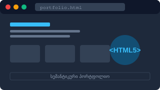

პროექტი 1: მრავალგვერდიანი სემანტიკური პორტფოლიო
სტატუსი: წარმატებით დასრულებული
თარიღი:

მიზანი და აღწერა: ეს პროექტი წარმოადგენს პირად პორტფოლიოს, რომელიც აგებულია მხოლოდ და მხოლოდ სუფთა HTML5-ის სემანტიკური თეგებით. პროექტი მოიცავს 5 დამოუკიდებელ ურთიერთდაკავშირებულ გვერდს: მთავარი, ჩემ შესახებ, პროექტები, უნარები, კონტაქტი.
გამოყენებული ტექნოლოგიური ელემენტები:
- სტრუქტურული თეგები:
<header>,<nav>,<main>,<section>,<article>,<aside>,<footer> - მედია და მონაცემები:
<figure>,<figcaption>,<table>,<time> - მომხმარებელთან ინტერაქცია:
<form>,<input>,<details>,<summary>
კოდის სანიმუშო ფრაგმენტის ნახვა HTML
<!-- სემანტიკური სტრუქტურის მაგალითი -->
<article>
<header>
<h3>პროექტის სათაური</h3>
<time datetime="2026-10-25">25 ოქტომბერი, 2026</time>
</header>
<p>პროექტის დეტალური აღწერა...</p>
</article>ბმული: თქვენ ამჟამად ათვალიერებთ ამ პროექტს.